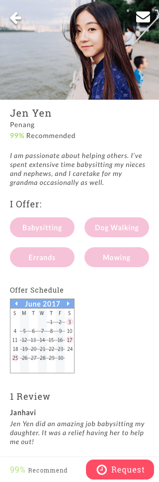
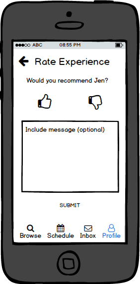

Time Swap is a Malaysian based startup company that wants to help users exchange time instead of money. While I was instrumental in the majority of the app design, for this case study I am going to focus on the biggest challenge I had to overcome: building enough trust in users to ensure they could use Time Swap with confidence.
The purpose of Time Swap is to allow users to exchange time with each other but what if Jenny doesn’t trust Mandy (a stranger) to watch her kids for an hour? Or what if Thomas is afraid that having Brandy over to mow his lawn could result in a ruined flower bed?
I had to find friendly solutions for users to build trust with each other in order to make Time Swap's idea successful. I checked in with potential users and through surveys and interviews started gathering useful information to help me solve my problem.
Surprisingly only 20% of users would be interested in background checks
90% of users want the ability to rate their experiences
Heather is a mom who needs help but has a hard time trusting others
From the surveys and through conducting interviews I knew the three key functions that I needed to add to Time Swap to build trust in users:
1. Profile page complete with a photo and bio for each user.
2. Rating system that allows users to review their experiences.
3. Messaging feature that allows users to communicate with each other and get to know each other.
I wanted to give Time Swap a Facebook-esque feel that allows users to view each other's profile pages, and read more about them through their bio. I hoped to create in users a sense of security that they can know a user through this simple vetting process. Here are the results of the designs for the wireframe and mockup:
Profile Wireframe
Profile Mockup
I put a rating system in place to protect both parties of users: those who are offering their time and those who are requesting someone else’s time. If Johnny mows Susan’s yard and runs over her flower bed, other users can know Johnny isn’t great at mowing. It also protects those offering their time. If Janelle is going to babysit for Shani and Shani says she’ll be gone an hour but she is actually gone three hours, others users can know that Shani isn’t a great person to help out if they're on a tight schedule!
I decided to use a thumbs up/thumbs down system instead of five stars because it makes people more committal about their rating. They either had a good experience or they didn’t. The comment section captures any notes users choose to leave about their experience and the reason for the rating they gave.
Below are some iterations for the wireframes and mockups of the rating system.
Wireframe of rating system
Mockup of rating system
Wireframe of rating results
Mockup of rating results
The message system allows users to communicate with each other to build a relationship. Time Swap isn't going to be able to vet a user like a mom would who is considering babysitter options. Now she can ask the questions she wants to ask to ensure she feels comfortable with a babysitter choice.
Ultimately, through testing I was able to confirm that the features I designed for the site will allow users to use Time Swap with more confidence. My goal of providing friendly solutions to build trust in users was a success and I’m excited to see the official launch of this project in the coming year.